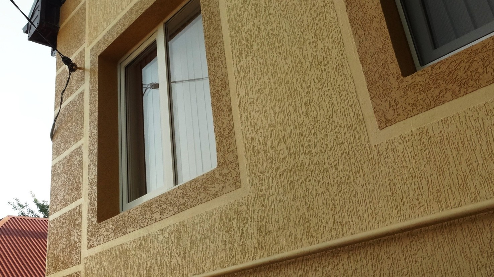
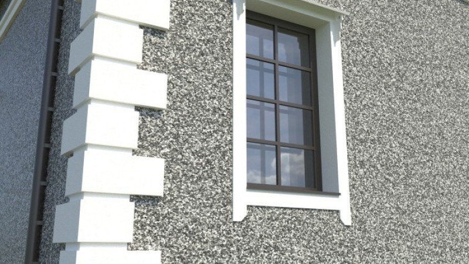

Штукатурка Короедом
Короед — это декоративная фасадная и интерьерная штукатурка, создающая эффект древесины, изъеденной короедом (отсюда и название).
Особенности:
Структура формируется за счёт гранул, которые, при затирании, оставляют характерные бороздки.
Эффект можно регулировать направлением затирки (горизонтально, вертикально, кругами).
Подходит как для наружных, так и для внутренних работ.
Устойчива к влаге, морозу и механическим воздействиям.
Применяется на бетон, гипсокартон, штукатурку, ДСП и др.
Преимущества:
Эстетичный и узнаваемый внешний вид.
Простота в нанесении.
Хорошо скрывает мелкие дефекты поверхности.

Штукатурка Камешковая
Камешковая штукатурка — это разновидность декоративной штукатурки с равномерной зернистой структурой, напоминающей мелкие камешки.
Особенности:
В составе — мелкие фракции минерального наполнителя (например, кварцевый песок).
Создаёт шероховатую, зернистую поверхность без борозд.
Отлично подходит для фасадов, заборов, цоколей и других наружных элементов.
Устойчива к УФ-излучению, осадкам, перепадам температур.
Преимущества:
Прочность и долговечность.
Устойчивость к загрязнениям и легкость в уходе.
Эффект природного камня — аккуратно и солидно выглядит.
